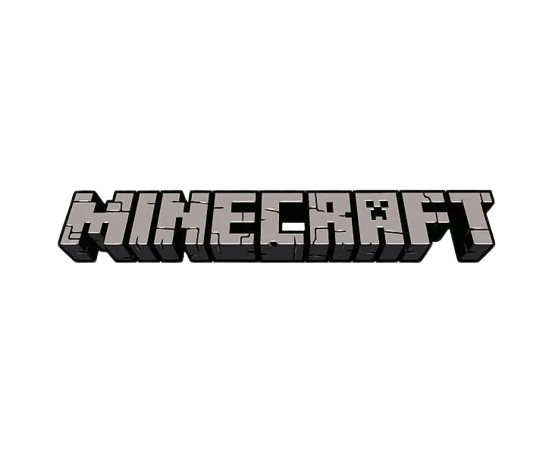
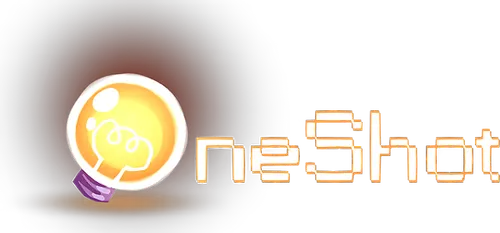
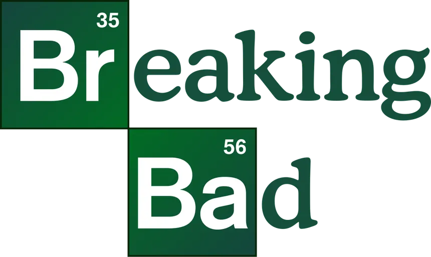

Hola, soy Ángel Santiago Hernández Flores.
Este es mi espacio personal, un lugar donde estaré
hablando sobre mí, compartiendo quién soy, qué me
gusta y qué cosas forman parte de mi mundo.
Tengo 19 años, nací en
Chihuahua capital y soy zurdo.
Mi cumpleaños es el 7 de noviembre.
Me considero una persona
curiosa, creativa y carismática.
Me gusta descubrir cosas nuevas, explorar ideas
y aprender.
¿Jelty? Es un apodo que me acompaña desde primero
de secundaria. Han pasado los años y ahora mi
nombre es todo un mito.
INFORMACIÓN PERSONAL
Edad: 19 años
Cumpleaños: 7 de noviembre
Nacimiento: Chihuahua, México
Dato curioso: Soy zurdo
Apodo: Jelty
EDUCACIÓN
Carrera: Ingeniería en Sistemas
Universidad: La Salle Chihuahua
BIENVENIDO A MI MUNDO
ANGEL OS
ARCHIVO PERSONAL DEL JUGADOR
Mi historia
Todos tenemos un punto de partida.
Esta es la historia de cómo empezó mi aventura,
las personas que conocí y los caminos que me trajeron hasta aquí.
UN RECORRIDO POR MI VIDA
MI LÍNEA DEL TIEMPO
CAPÍTULO 01 · PREESCOLAR
Un comienzo tranquilo
Cuando estaba en kínder era un niño bastante tranquilo.
Casi no tenía amigos; de hecho, solamente tenía uno.
Una vez casi me entierro un palo de metal en el ojo.
Por poco lo pierdo, pero aquí seguimos contando la historia.
CAPÍTULO 02 · PRIMARIA
Una etapa bastante normal
Mi paso por la primaria fue bastante tranquilo.
Si tuviera que describirlo en pocas palabras,
diría que se me hizo algo aburrido.
CAPÍTULO 03 · SECUNDARIA
La época dorada
La secundaria fue una de las etapas que más disfruté.
Tenía muchos amigos, salíamos casi todos los días
y siempre encontrábamos algo que hacer.
Éramos unos vagos y hacíamos un desmadre,
pero fueron años llenos de buenos recuerdos.
También fue cuando comenzó a interesarme la programación.
CAPÍTULO 04 · MIS PRIMEROS PROYECTOS
El inicio de mi aventura en la programación
Aproximadamente a los 11 años hice mi primer videojuego
en Roblox Studio.
Me encantaba crear juegos. Me la pasaba todos los días
viendo tutoriales, aprendiendo herramientas y tratando
de descubrir cómo funcionaba todo.
CAPÍTULO 05 · PREPARATORIA
Una nueva etapa
Durante la preparatoria comencé a enfocarme mucho más
en mis estudios. Aunque no me fue nada mal, poco a poco
sentí que aquella chispa por desarrollar videojuegos
se iba apagando.
En tercero llegaron nuevas amistades, tuve novia,
hice viajes y viví experiencias especiales.
CAPÍTULO 06 · SEXTO SEMESTRE
Recuperando la chispa
En sexto semestre decidí volver a avanzar con mis
proyectos de videojuegos. Estaba un poco oxidado,
pero poco a poco fui recuperando mis habilidades.
Tal vez la chispa nunca desapareció; solamente
estaba esperando el momento para volver a encenderse.
CAPÍTULO 07 · VACACIONES DE GRADUADO
El mundo laboral
Después de graduarme decidí trabajar y conocer
experiencias fuera de la escuela.
Trabajé dos veces como mesero,
una vez como cajero y también
trabajé con fosas sépticas en Estados Unidos.
Cada trabajo me dejó nuevos aprendizajes.
CAPÍTULO 08 · ACTUALIDAD
Un nuevo mundo: la universidad
Después de terminar mis vacaciones de graduado,
comenzó una nueva aventura: la universidad.
Actualmente estudio Ingeniería en Sistemas
en La Salle Chihuahua. Aquí comienza otro
capítulo con nuevos retos, conocimientos y proyectos.
LA AVENTURA CONTINÚA...
Esta historia todavía se está escribiendo.
Aún quedan muchos mundos por explorar, proyectos por crear
y experiencias por vivir.
Continuará...
ANGEL OS
DIARIO DE EXPLORACIÓN · MODO AVENTURA
Mis aventuras
Hay lugares que se visitan y lugares que se quedan contigo.
Aquí guardo algunos recuerdos de los mundos que he tenido
la oportunidad de conocer.
DESTINO 01
COLOMBIA
RECUERDOS DE VIAJE
DESTINO 02
UNIVERSAL
UN DÍA PARA RECORDAR
DESTINO 03
POTOSÍ
NATURALEZA Y MOMENTOS
El mundo es demasiado grande para quedarse en un solo lugar.
Estas son algunas de las aventuras que forman parte de mi historia.
FIN DEL REGISTRO · LA EXPLORACIÓN CONTINÚA
ANGEL OS
ARCHIVO PERSONAL · INTERESES DEL JUGADOR
Mis gustos
Todos tenemos cosas que nos apasionan.
Aquí encontrarás algunos videojuegos, series y pasatiempos
que forman parte de mi mundo.
VIDEOJUEGOS
VIDEOJUEGO · SUPERVIVENCIA Y CREATIVIDAD

Minecraft es uno de mis videojuegos favoritos y
forma parte de mi vida desde que era pequeño.
Es uno de esos juegos a los que siempre puedo regresar.
Me encanta la libertad que ofrece para explorar,
construir, sobrevivir y crear prácticamente cualquier cosa.
Cada mundo puede convertirse en una aventura diferente.
VIDEOJUEGO · AVENTURA Y PUZLES

OneShot es un videojuego protagonizado por Niko,
un pequeño personaje con apariencia de gato que
despierta en un mundo extraño y desconocido.
Su misión es devolver la luz a un mundo que ha
quedado sumido en la oscuridad. Durante el viaje
se resuelven acertijos, se conocen personajes
y se descubren secretos.
Es una aventura que rompe un poco la cuarta pared
y crea una conexión muy particular entre el jugador
y el protagonista.
SERIES Y ANIME
SERIE · DRAMA Y CRIMEN

Breaking Bad cuenta la historia de Walter White,
un profesor de química que, después de recibir
un diagnóstico de cáncer, toma una decisión
que cambiará completamente su vida.
Junto a Jesse Pinkman comienza a fabricar
metanfetamina, adentrándose en un mundo cada vez
más peligroso. Me gusta su historia, sus personajes
y la manera en que evoluciona todo.
ANIME · CIENCIA FICCIÓN Y ACCIÓN
GURREN LAGANN
Gurren Lagann es un anime que sigue a Simon y Kamina,
dos jóvenes que viven bajo tierra y sueñan con
descubrir qué existe más allá de su mundo.
Su aventura comienza cuando encuentran un misterioso
robot y se enfrentan a un universo lleno de enemigos,
batallas y desafíos cada vez más grandes.
Es una historia sobre la amistad, la determinación
y nunca dejar de avanzar, incluso cuando todo parece imposible.
PASATIEMPOS Y CREATIVIDAD
PASATIEMPO · PROGRAMACIÓN Y DESARROLLO
CREAR VIDEOJUEGOS
Una de las cosas que más disfruto es crear videojuegos.
Me gusta experimentar con ideas, diseñar escenarios
y convertir conceptos en algo que otras personas
puedan jugar.
Roblox Studio fue una de las herramientas que despertó
mi interés por la programación cuando era pequeño.
Desde entonces me ha gustado aprender cómo funcionan
los videojuegos y descubrir todo lo que se puede crear
con código.
Para mí, desarrollar un juego es una combinación
de creatividad, paciencia y aprendizaje.
ESTOS SON ALGUNOS DE MIS MUNDOS
Videojuegos, historias, personajes y proyectos.
Cada uno forma parte de las cosas que disfruto.